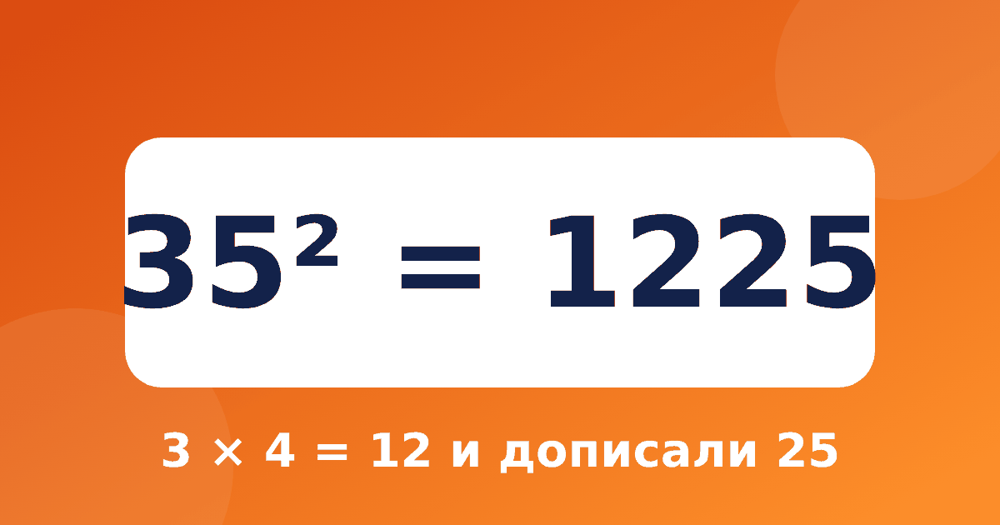

Как возвести в квадрат число на 5 за несколько секунд

Возведение в квадрат чисел, которые оканчиваются на 5, — самый эффектный приём из системы Трахтенберга. Ребёнок называет ответ почти мгновенно, а взрослые обычно удивляются. При этом приём совсем несложный и легко объясняется. Квадрат числа, оканчивающегося на 5, можно найти за несколько секунд, и такое возведение в квадрат в уме производит сильное впечатление даже на взрослых. Приём не требует ничего, кроме таблицы умножения.
Правило из трёх шагов
Возьмём число, которое оканчивается на 5, например 35.
- Уберите пятёрку: осталось 3.
- Умножьте 3 на следующее число, то есть на 4: 3 × 4 = 12.
- Допишите справа 25: получилось 1225.
Значит, 35² = 1225. Ту же схему можно записать так: число десятков умножаем на следующее число и приписываем 25.
Примеры
- 15² = 1 × 2, потом 25: 225
- 25² = 2 × 3, потом 25: 625
- 45² = 4 × 5, потом 25: 2025
- 65² = 6 × 7, потом 25: 4225
- 75² = 7 × 8, потом 25: 5625
- 85² = 8 × 9, потом 25: 7225
Видите закономерность? Справа в каждом ответе стоит 25, а слева меняются только числа 2, 6, 12, 20, 30, 42 и далее. Это произведения соседних чисел: 1 × 2, 2 × 3, 3 × 4, 4 × 5 и так далее. Если ребёнок помнит эти произведения из таблицы умножения, он считает почти мгновенно.
Трёхзначные числа
Правило работает и для 105, 115, 125 и дальше. Уберите пятёрку: остаётся 11. Следующее число 12. Перемножьте: 11 × 12 = 132. Допишите 25: 115² = 13225. Для 125 это 12 × 13 = 156, ответ 15625. Для 105 это 10 × 11 = 110, ответ 11025. Ребёнку, который освоил умножение на 11 и 12, такие примеры по силам.
Почему это работает
Число, которое оканчивается на 5, можно записать как 10a + 5, где a — число десятков. Раскроем скобки: (10a + 5)² = 100a² + 100a + 25 = 100 × a × (a + 1) + 25. Слагаемое 100 × a × (a + 1) — это a × (a + 1) сотен, а 25 — остаток. Поэтому справа записываем 25, а слева a × (a + 1). Для 35 это 100 × 3 × 4 + 25 = 1225.
Школьнику младших классов формулу показывать не обязательно. Хватит проверки: 35 × 35 = 35 × 30 + 35 × 5 = 1050 + 175 = 1225. Для старшеклассников это хороший пример, как алгебра объясняет арифметические фокусы. Подробнее о квадратах чисел читайте в статье про квадраты чисел для детей.
Тренируемся
Закройте ответы, посчитайте по правилу и сверьтесь.
- 55² = 3025
- 95² = 9025
- 105² = 11025
- 135² = 18225
Типичные ошибки
- Умножают число десятков на само себя, а не на следующее число.
- Забывают дописать 25 или пишут 5.
- Для трёхзначных чисел убирают лишнее: например, у 115 оставляют 1, а не 11.
Вопросы и ответы
Работает ли правило для чисел, которые не оканчиваются на 5?
Нет, это правило только для чисел на 5. Для чисел вроде 34 или 47 используют другие приёмы, например метод двух пальцев из следующих статей или разложение на сумму.
С какого класса можно показывать?
Приём доступен всем, кто знает таблицу умножения до 9. Обычно его показывают в 4–5 классе, но интересно он будет и младшим школьникам, особенно в виде игры «угадай квадрат».
Покажите это наглядно
Нарисуйте квадрат 35 × 35 клеток и разделите его на четыре части: большой квадрат 30 × 30, два прямоугольника 30 × 5 и маленький квадрат 5 × 5. Считаем площади: 900 + 150 + 150 + 25 = 1225. Ребёнок видит, что 25 — это маленький квадрат в углу, а остальное складывается в a × (a + 1) сотен. После такой картинки правило перестаёт быть фокусом.
Игра «Угадай квадрат»
Один игрок называет число на 5, второй мгновенно отвечает квадратом. За правильный ответ получает очко, за ошибку очко получает соперник. Начинайте с чисел до 100, потом добавляйте 105, 115 и 125. Игра занимает три минуты и отлично тренирует таблицу умножения: ведь приходится умножать a на a + 1.
Где пригодится
Квадраты чисел на 5 встречаются в задачах на площадь: участок 25 на 25 метров, плитка 45 на 45 сантиметров. Ребёнок, который знает правило, быстро прикидывает площадь, а заодно тренирует таблицу умножения и умение работать с числами в уме. Для проверки ответа достаточно посмотреть на последние цифры: у квадрата числа на 5 они всегда 25.
Что дальше
Закрепите приём в тренажёре «Быстрый счёт»: модуль «Квадрат числа на 5» состоит из короткого объяснения, заданий вместе со взрослым и проверки. Достаточно 5–10 минут в день.